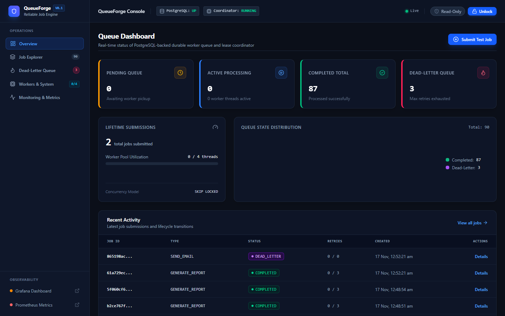
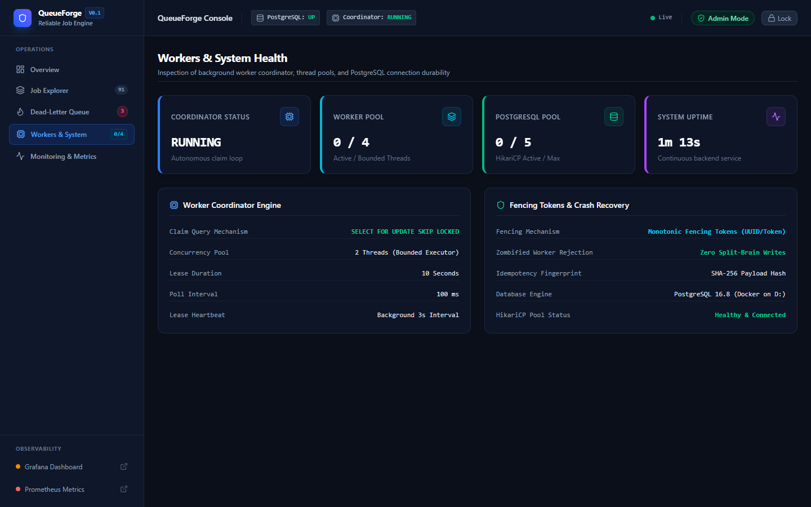
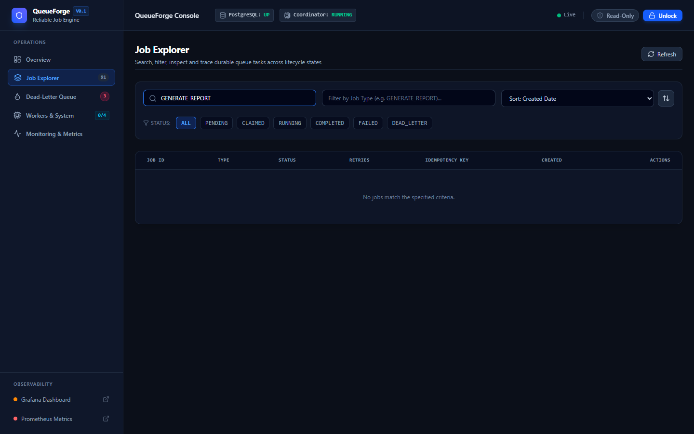
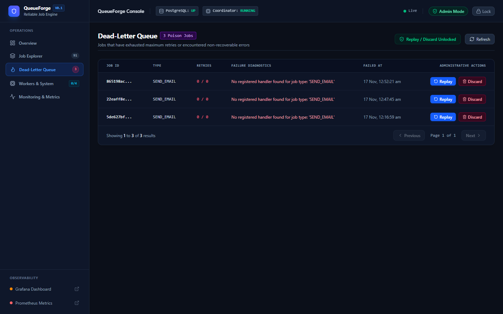

QueueForge V2: PostgreSQL Distributed Task Platform
ACID-Durable Background Jobs, Worker Fencing & Multi-Tenant Scheduling without External Brokers
Scene 1 • 0:00 – 0:25
💡 The Dual-Write Hazard
Traditional queues rely on Kafka or RabbitMQ. If your database commits but message broker dispatch fails, background tasks are lost. QueueForge turns PostgreSQL 16 into an ACID-durable queuing engine.
⚡ Distributed Architectural Pillars
• SKIP LOCKED Claiming: Contention-free concurrent row locking.
• FairShare DRR: Multi-tenant starvation resistance.
• Lease Fencing: Prevents zombie worker split-brain.
• Transactional Outbox: Atomic business + event writes.
• FairShare DRR: Multi-tenant starvation resistance.
• Lease Fencing: Prevents zombie worker split-brain.
• Transactional Outbox: Atomic business + event writes.
7
Decoupled Services
0
External Brokers Needed
Obsidian Pulse Operational Dashboard
React 19 / TypeScript Real-Time Telemetry & Public Demo Response Sanitization
Scene 2 • 0:25 – 0:50

🖥️ Technology Stack
• Frontend: React 19, TypeScript, Tailwind CSS, Lucide Icons.
• Data Sync: TanStack Query 3-second periodic REST polling (not SSE).
• Build: Vite 6, production minification, 0 console warnings.
• Data Sync: TanStack Query 3-second periodic REST polling (not SSE).
• Build: Vite 6, production minification, 0 console warnings.
🛡️ Public Demo Redaction
Operators can publicly inspect active throughput, queue depth, and worker heartbeats while tenant payload secrets remain masked at the Spring Boot response layer.
3s
REST Polling Cadence
1440×900
Native UI Resolution
Distributed Workers & Contention-Free Claiming
PostgreSQL SKIP LOCKED, Cryptographic Lease Fencing & Zombie Crash Recovery
Scene 3 • 0:50 – 1:20


⚙️ Concurrency Coordination
• Row-Lock Claiming:
• Heartbeats: 5-second interval heartbeat updates to
SELECT FOR UPDATE SKIP LOCKED allows worker-1 and worker-2 to claim batches simultaneously without head-of-line lock contention.• Heartbeats: 5-second interval heartbeat updates to
qf_worker_heartbeats.
🛡️ Split-Brain Fencing
Claims carry an ephemeral 30-second lease and a monotonic
claim_check_token. If a worker hangs, the lease reaper re-queues the job. The zombie worker is fenced out upon return, guaranteeing execution safety.
30s
Lease Expiration Time
2
Independent Worker JVMs
FairShare Multi-Tenant DRR Scheduling Benchmark
Deficit Round Robin Mitigates Noisy-Neighbor Starvation Under High Contention
Scene 4 • 1:20 – 1:50

📊 1,080-Job Noisy Neighbor Benchmark
• Workload Profile: 1 flood tenant submitting 1,000 jobs alongside 4 quiet tenants submitting 20 jobs each.
• FIFO Baseline: Quiet tenants suffered severe head-of-line blocking (11.8s median wait).
• FIFO Baseline: Quiet tenants suffered severe head-of-line blocking (11.8s median wait).
-89.8%
Quiet Tenant Median Wait (11.8s → 1.2s)
1.0000
Jain's Fairness (from 0.2329)
⚖️ Engineering Tradeoff Disclosed
Aggregate throughput dropped from 89.65 to 70.62 jobs/s (a planned 21.2% throughput tradeoff) to enforce strict proportional fairness and prevent tail starvation.
Transactional Outbox Pattern & Durable Idempotency
Atomic Domain State + Outbox Writes Paired with SHA-256 Inbox Deduplication
Scene 5 • 1:50 – 2:15
🔒 Atomic ACID Guarantees
Orders and outbox events commit together in a single PostgreSQL transaction. Even if the network crashes immediately, the event is securely staged for delivery.
🛡️ Durable Inbox Deduplication
The simulated receiver computes a SHA-256 payload digest. Duplicate deliveries return cached 200 OK responses, guaranteeing exactly-once semantics across network retries.
100%
ACID Dual-Write Safety
SHA-256
Inbox Idempotency Key
Dead-Letter Queue & Fault Recovery Operations
Transient vs Permanent Error Classification, Exponential Backoff & Authenticated Replay
Scene 6 • 2:15 – 2:40

⚠️ Error Classification
• Transient Failures: Network socket timeouts and 503s trigger exponential backoff with jitter (up to 3 retries).
• Permanent Failures: 400 Bad Request or malformed payloads bypass retries and route directly to DLQ.
• Permanent Failures: 400 Bad Request or malformed payloads bypass retries and route directly to DLQ.
🔄 Authenticated Manual Replay
Operators inspect captured stack traces, unlock redacted payloads using an administrative API key, and trigger controlled job re-queuing directly from Obsidian Pulse.
3
Max Retry Attempts
Admin Key
Replay Authorization
Automated Verification & Open-Source Artifacts
264 Automated Tests, 8 Docker Smoke Verification Stages & Complete Reproducibility
Scene 7 • 2:40 – 3:00
✅
GitHub Actions CI Workflow: 7 / 7 Jobs Passing
Verified Run: #44935616424 • Commit 6f9d971 (main)
187
Backend Tests
13
Receiver Tests
44
Frontend Tests
20
Playwright E2E
GitHub Repository & Architecture Documentation
github.com/saipranav22-commits/queueforge
🏆 Verification Rigor
QueueForge V2 is independently tested across unit, integration, database transactional isolation, and full browser UI workflows.
264
Automated Tests
8
Docker Smoke Stages
📖 Open-Source Collateral
Full source code, detailed distributed systems design documents, and reproducible FairShare benchmarks are available in the repository.